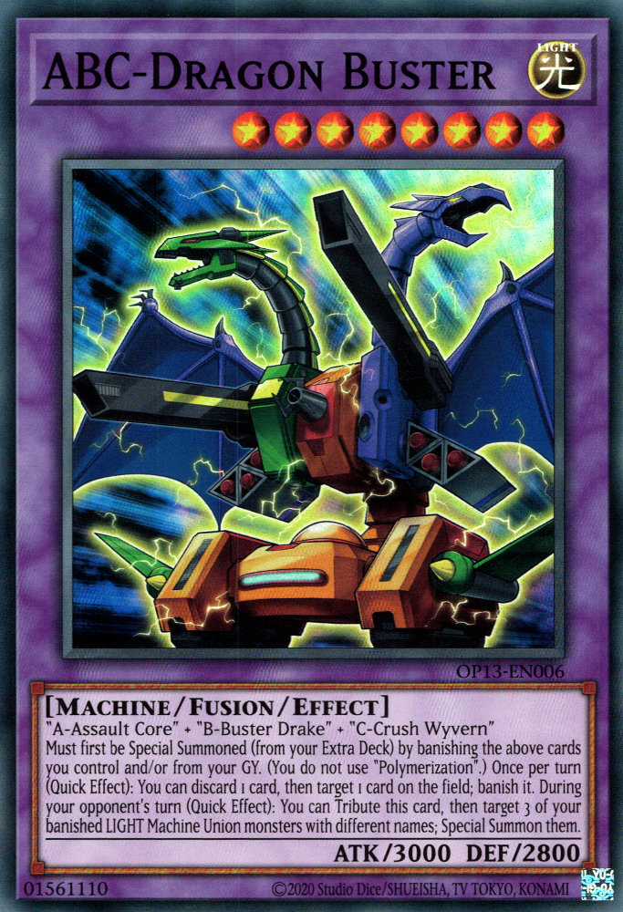

Fusion:Old Days
Fusion was the very first extra deck summoning mechanic, the monsters were often just two monsters "fused" together. There was very little utility to these monsters in the early days, besides very niche and rare times that a fusion monster would be summoned out. It was very slow and clunky, requiring the use of a called called "polymerization", and the monsters needed for the specific fusion monster.
Fusion now

Modern fusion monsters have far more use. Often timses, a duelist is able to fusion summon without the use of a polymerization.
Many monsters have the effect to enable a fusion summon, using themselves and other monsters.
Other monsters don't even need an effect to summon, they can be summoned by tributing the needed monsters, or even banishing them, as with the case of ABC Dragon Buster!
Many of these monsters allow you to facilitate your plays further, offering useful effects from searching your deck, summoning from your graveyard, or even
disrupting your opponent on their own turn!
Simply controlling the monsters and sending them to grave to fusion summon was often called "contact fusion",
but ultimately the term did not stay popular. Any of the old variants of fusion no longer exist in name, and any fusion summon is just called a fusion summon now. A fusion summon is a form of special summon.
This is important because as we know, each player can only normal summon once per turn, but
they are able to special summon as many times as they can, assuming they have the cards to
facilitate these summons!
This opens up many possibilities, because if a player has enough knowledge and a skill,
there is no limit to the amount of fusion summons a player can do. Theoretically a player can
summon their entire extra deck if they have the means to!